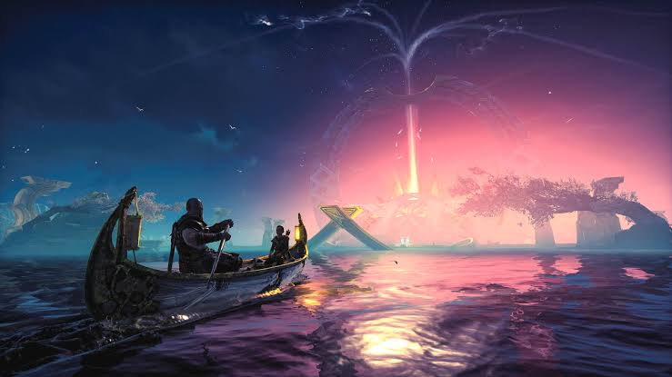
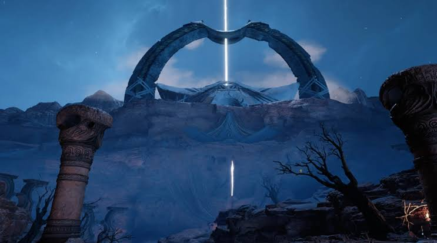
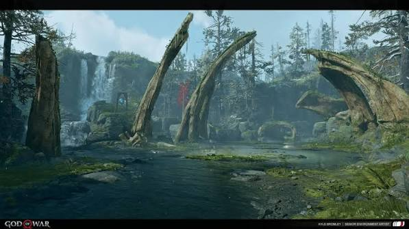
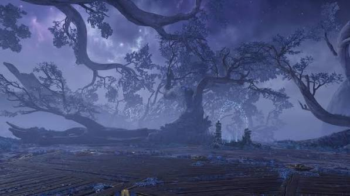
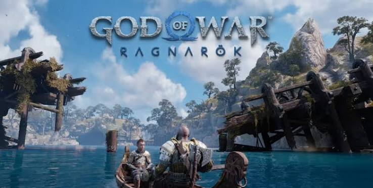

Santa Monica Studios
Gallery Page
The Galleria
Sony's Santa Monica Studio is world-renowned for its breathtaking environmental design. While they are most famous for the brutal and epic vistas of the God of War series, they have also incubated beautifully unique indie projects like Bound.

Midgard's Mountainous Passages (God of War)

The Etheral waters of Alfheim

Midgard's Grounds

The mystic tree of life (irminsul)

The snowy Passages of midgard
